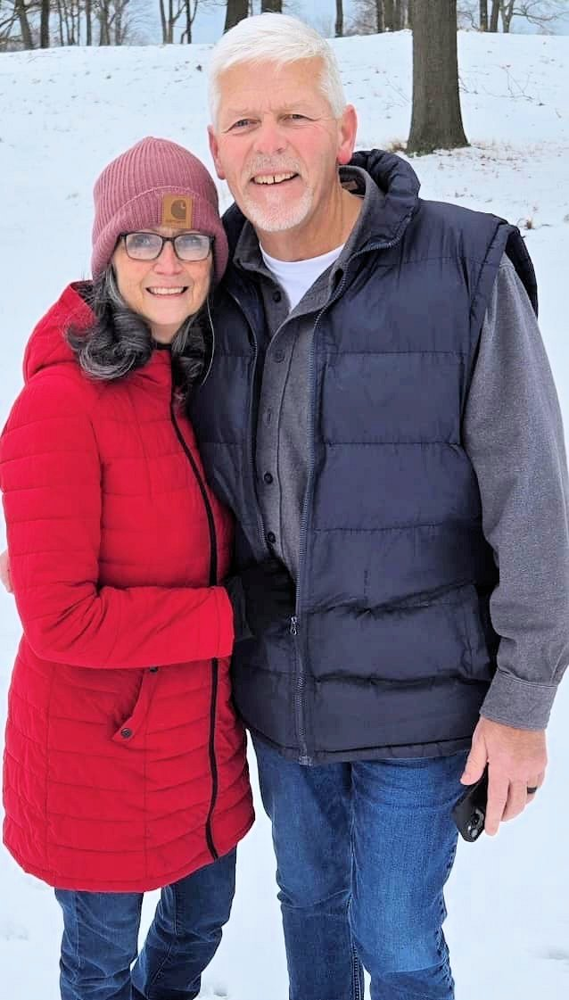
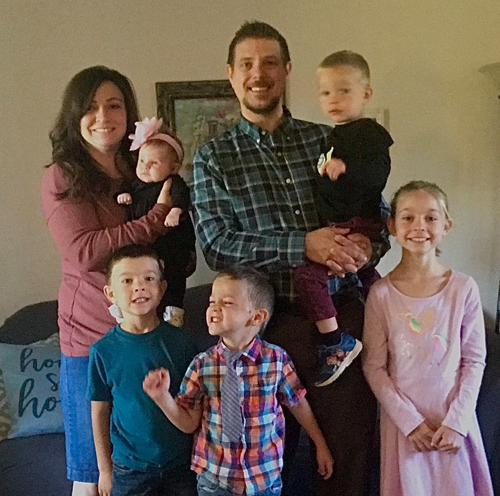

Our Leadership

Pastor Donald Reynolds
Pastor Donald Reynolds has been a steadfast and dedicated leader at First Baptist Church of Capac since November 15, 1999, faithfully serving the congregation for over 25 years. His long tenure reflects a deep commitment to the spiritual growth and well-being of the church community, guiding its members with wisdom, compassion, and a heart for ministry. Under his leadership, the church has undoubtedly been a beacon of faith and fellowship in Capac, Michigan, touching countless lives with the love of Christ.

David Bloyd
David Bloyd has been volunteering as the youth pastor at First Baptist Church of Capac. He has made a meaningful impact on the young people of the congregation. His dedication to youth ministry reflects a deep commitment to inspiring the next generation in their faith.